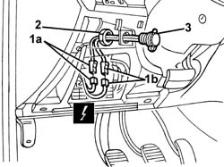

5580E24 car alarm cut-out switch (in engine bay) - r r
- Path
- Procedures > 55 ELECTRICAL EQUIPMENT > 5580 SPECIAL ACCESSORIES > 5580E anti-theft device > 5580E24 car alarm cut-out switch (in engine bay) - r r
- Kind
- repair procedure (removal / refitting; the operation number is the code)
- Applies to
- all engines; all production periods
- Interactive page
- https://sloeber94.github.io/elrnDB-a156/en/#/3238544
Applies to: all engines; production: fino a 03/98, da 04/98 a 02/99, da 03/99 a 01/00, da 02/00 a 01/01, da 02/01 a 02/02
 Removing
Removing
 Refitting
Refitting1. Disconnect electrical connections (1a), (1b).
 | Name | Connector |
|---|---|---|
1a | Alarm switch |
| Name | Connector |
|---|---|---|
1b | Alarm switch |
2. Undo the nut.
3. Remove the switch and bridge.

Applies to: all engines; production: fino a 03/98, da 04/98 a 02/99, da 03/99 a 01/00, da 02/00 a 01/01, da 02/01 a 02/02
Refitting
RemovingCheck that the switch is undamaged.
Position the switch and bridge.
Tighten the nut.
Connect the electrical connection.